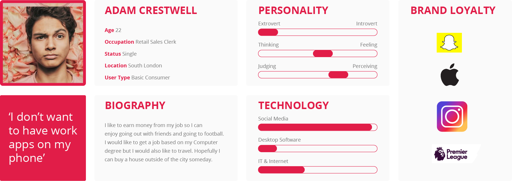
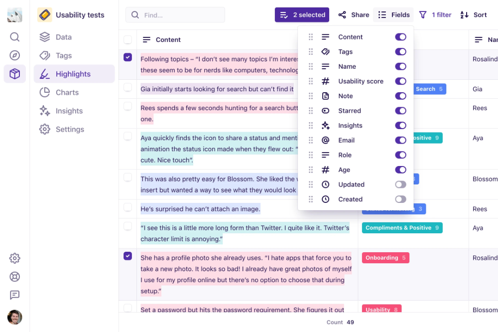
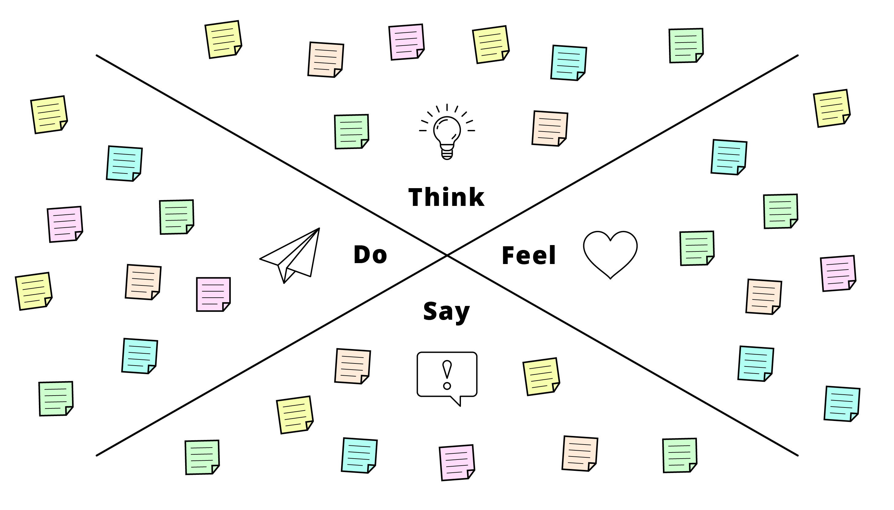

Payslip Consumer Research For Native App
*Some screens and steps are concepts to protect IP

General Overview
-
The payslip section of the Access Native App is one of the few features available to most users,
regardless of tiers or packages.
-
For the most part payslips along with a few other HR basics, booking time and team
calendars are the primary experience for a large percentage of all users.
-
This is an employee self-serving feature which would allow users to manage
all aspects of a historically paper payslip.
-
Users expect to be notified of payslip delivery, clearly understand the components
of a payslip, view, search and print all payslips to date.
-
Considerations should include application speed, communication between
other functions and payslips, notification & printing.
Problem statement
Previously, too much attention had been given to the user interface, this design debt left users frustrated
with what should have been a simple and specific experience.
Research and feedback showed that users found it difficult to identify what the current payslip was
vs a previous one. They also saw the lack of a printing option was a major oversight.
The user interface is too complex and the user experience is too basic, this needed to be reversed.
Users and audience
To start, we tried to identify all the potential users of a payslip
function and group them into personas.
*I will only use a single persona for brevity, several would be created as well as a company persona
in practice.
-
Basic Consumer - A typical employee who may not
have access to any other features.
-
Occasional Monthly User - Only looks at his payslip
if there is a problem with his salary hitting his bank.
-
Motification Driven Transaction - LIkes to be notified
that he has a new payslip to avoid opening the app.

How this persona was created
To start, we tried to identify all the potential users of a payslip function and group them into personas.
I personally like to conduct several user interviews, between 5 & 10 in an ideal world per persona.
I prefer to record interviews where permitted and use a tool like Dovetail to analyze sentiment and content after.
dovetailDovetail can helpfully do some of this work for me but I will alway comb the transcript myself.

With detailed analysis of user group it is pretty easy to synthesize large data sets into single users
Roles and responsibilities
I primarily work on the research gathering and interviewing and work with the UI designers after the fact.
But of course in reality you must wear many hats and I often assist with the physical design work as well as roadmapping.
Scope and constraints
This was a pretty small project with large implications for the business but we were constrained by
the need to keep the application consistent with the wider design system.
We wanted to have an application which was easy to use but crucially possible to build in th
time frame. This was not a wheel inventing process.
User - All age ranges and both ends of the tech scale who use a
native app for payslip managment.
Process
Empathy Mapping
Once we understood our users we drew empath maps to try an understand the emotional
connection people have to HR application'
